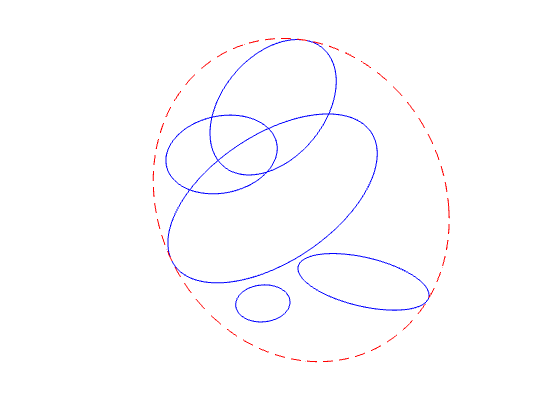

% Section 8.4.1, Boyd & Vandenberghe "Convex Optimization" % Original version by Lieven Vandenberghe % Updated for CVX by Almir Mutapcic - Jan 2006 % (a figure is generated) % % We find a smallest ellipsoid containing m ellipsoids % { x'*A_i*x + 2*b_i'*x + c < 0 }, for i = 1,...,m % % Problem data: % As = {A1, A2, ..., Am}: cell array of m pos. def. matrices % bs = {b1, b2, ..., bm}: cell array of m 2-vectors % cs = {c1, c2, ..., cm}: cell array of m scalars % ellipse data As = {}; bs = {}; cs = {}; As{1} = [ 0.1355 0.1148; 0.1148 0.4398]; As{2} = [ 0.6064 -0.1022; -0.1022 0.7344]; As{3} = [ 0.7127 -0.0559; -0.0559 0.9253]; As{4} = [ 0.2706 -0.1379; -0.1379 0.2515]; As{5} = [ 0.4008 -0.1112; -0.1112 0.2107]; bs{1} = [ -0.2042 0.0264]'; bs{2} = [ 0.8259 -2.1188]'; bs{3} = [ -0.0256 1.0591]'; bs{4} = [ 0.1827 -0.3844]'; bs{5} = [ 0.3823 -0.8253]'; cs{1} = 0.2351; cs{2} = 5.8250; cs{3} = 0.9968; cs{4} = -0.2981; cs{5} = 2.6735; % dimensions n = 2; m = size(bs,2); % m ellipsoids given % construct and solve the problem as posed in the book cvx_begin sdp variable Asqr(n,n) symmetric variable btilde(n) variable t(m) maximize( det_rootn( Asqr ) ) subject to t >= 0; for i = 1:m [ -(Asqr - t(i)*As{i}), -(btilde - t(i)*bs{i}), zeros(n,n); -(btilde - t(i)*bs{i})', -(- 1 - t(i)*cs{i}), -btilde'; zeros(n,n), -btilde, Asqr] >= 0; end cvx_end % convert to ellipsoid parametrization E = { x | || Ax + b || <= 1 } A = sqrtm(Asqr); b = A\btilde; % plot ellipsoids using { x | || A_i x + b_i || <= alpha } parametrization noangles = 200; angles = linspace( 0, 2 * pi, noangles ); clf for i=1:m Ai = sqrtm(As{i}); bi = Ai\bs{i}; alpha = bs{i}'*inv(As{i})*bs{i} - cs{i}; ellipse = Ai \ [ sqrt(alpha)*cos(angles)-bi(1) ; sqrt(alpha)*sin(angles)-bi(2) ]; plot( ellipse(1,:), ellipse(2,:), 'b-' ); hold on end ellipse = A \ [ cos(angles) - b(1) ; sin(angles) - b(2) ]; plot( ellipse(1,:), ellipse(2,:), 'r--' ); axis square axis off hold off
Calling SDPT3 4.0: 94 variables, 15 equality constraints For improved efficiency, SDPT3 is solving the dual problem. ------------------------------------------------------------ num. of constraints = 15 dim. of sdp var = 31, num. of sdp blk = 7 dim. of linear var = 6 ******************************************************************* SDPT3: Infeasible path-following algorithms ******************************************************************* version predcorr gam expon scale_data HKM 1 0.000 1 0 it pstep dstep pinfeas dinfeas gap prim-obj dual-obj cputime ------------------------------------------------------------------- 0|0.000|0.000|5.3e+01|1.9e+01|3.7e+03| 5.000000e+01 0.000000e+00| 0:0:00| chol 1 1 1|0.784|0.775|1.2e+01|4.3e+00|9.5e+02| 2.983363e+01 -7.077314e+00| 0:0:00| chol 1 1 2|0.845|0.744|1.8e+00|1.1e+00|3.3e+02| 4.983568e+01 -8.153378e+00| 0:0:00| chol 1 1 3|1.000|0.894|8.9e-06|1.2e-01|5.6e+01| 3.017981e+01 -1.898935e+00| 0:0:00| chol 1 1 4|0.733|1.000|5.6e-06|1.0e-04|1.5e+01| 1.511527e+01 -3.114373e-01| 0:0:00| chol 1 1 5|0.925|0.986|4.3e-07|1.2e-05|1.2e+00| 1.190285e+00 3.201085e-03| 0:0:00| chol 1 1 6|1.000|1.000|6.9e-09|1.1e-06|5.3e-01| 5.626657e-01 3.398809e-02| 0:0:00| chol 1 1 7|0.896|0.991|2.1e-09|1.1e-07|5.9e-02| 1.220844e-01 6.287837e-02| 0:0:00| chol 1 1 8|1.000|0.924|6.4e-09|1.8e-08|2.1e-02| 9.631015e-02 7.562064e-02| 0:0:00| chol 1 1 9|0.955|0.945|6.1e-10|2.6e-09|1.2e-03| 7.968284e-02 7.848102e-02| 0:0:00| chol 1 1 10|0.936|0.984|3.9e-11|2.6e-10|7.6e-05| 7.875163e-02 7.867538e-02| 0:0:00| chol 1 1 11|0.955|0.967|1.8e-12|1.6e-11|3.6e-06| 7.868475e-02 7.868112e-02| 0:0:00| chol 1 1 12|1.000|1.000|1.8e-09|1.0e-12|5.6e-07| 7.868191e-02 7.868136e-02| 0:0:00| chol 1 1 13|1.000|1.000|7.5e-11|1.5e-12|2.2e-08| 7.868148e-02 7.868146e-02| 0:0:00|# chol 1 1 14|1.000|1.000|5.3e-11|2.2e-12|1.0e-09| 7.868147e-02 7.868146e-02| 0:0:00| stop: max(relative gap, infeasibilities) < 1.49e-08 ------------------------------------------------------------------- number of iterations = 14 primal objective value = 7.86814654e-02 dual objective value = 7.86814643e-02 gap := trace(XZ) = 1.01e-09 relative gap = 8.75e-10 actual relative gap = 8.81e-10 rel. primal infeas (scaled problem) = 5.33e-11 rel. dual " " " = 2.25e-12 rel. primal infeas (unscaled problem) = 0.00e+00 rel. dual " " " = 0.00e+00 norm(X), norm(y), norm(Z) = 2.4e+00, 3.0e+00, 8.1e+00 norm(A), norm(b), norm(C) = 1.4e+01, 2.0e+00, 3.2e+00 Total CPU time (secs) = 0.23 CPU time per iteration = 0.02 termination code = 0 DIMACS: 5.3e-11 0.0e+00 3.6e-12 0.0e+00 8.8e-10 8.7e-10 ------------------------------------------------------------------- ------------------------------------------------------------ Status: Solved Optimal value (cvx_optval): +0.0786815
